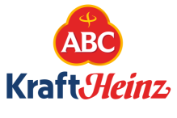

PROJECTS

Chili Line Project
PT. KRAFT HEINZ ABC KARAWANG
-
Handling projects for 4 main areas namely
preparation area, homomixer area, blending area, and
storage area
-
Creating PLC programs using CPU
S7 1516-3 PN/DP and
Remote IO ET200SP
-
Making HMI for each area using Siemens Comfort Panel
TP1200 and TP1500
-
Making trending, historical data, and data logging
Mill Juice Project
PT. GREAT GIANT FOODS LAMPUNG
-
Create a static display for the
SCADA system using WINCC Professional for the
Train Area, Polisher Area, CIP Area
-
PLC Program Migration from Schneider to
Siemens
Sugar Dissolving Project
PT. KRAFT HEINZ ABC KARAWANG
-
Handling projects with 2 main areas, namely
Cordials and RTD
-
The main processes made are
Dissolving, Check Brix, Prefilter, Buffer, Mixing, and
CIP
-
Creating PLC programs using CPU
S7 1512SP-1PN and
Remote IO ET200SP
-
Making HMI for each area using Siemens Comfort Panel
TP1200 and TP1500